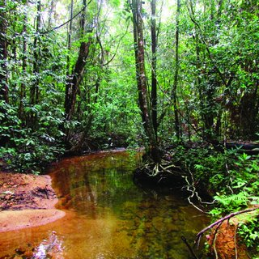
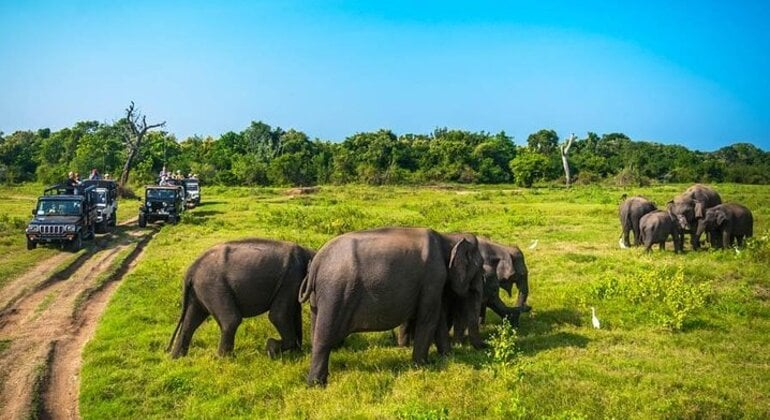
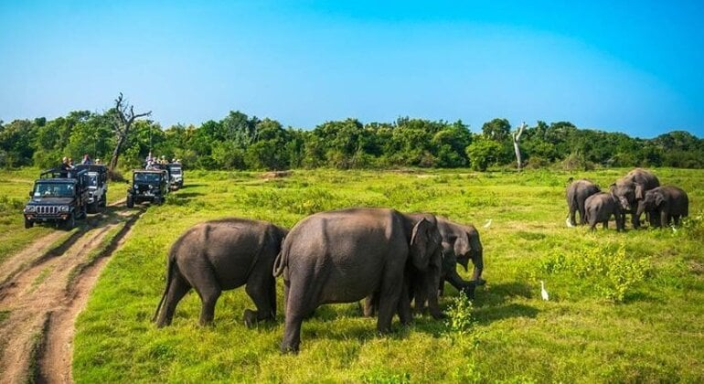
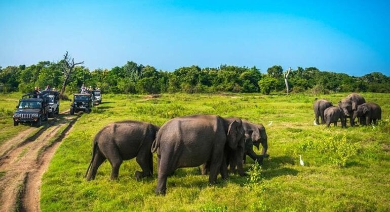

The Department of Wildlife Conservation is responsible for protecting and preserving wildlife habitats, as well as managing national parks and reserves. Its purpose is to ensure the long-term cohabitation of animals and human activities while encouraging conservation and biodiversity.
Key Responsibilities
Wildlife Protection- Enforcing rules and regulations that preserve wildlife, notably endangered species, from poaching, illegal trading, and other dangers.
Habitat Conservation- National parks, animal sanctuaries, and other protected places are managed and conserved to maintain different ecosystems and provide habitat for a vast range of species.
Research and Monitoring-Conducting scientific research and monitoring programs to determine the status of animal populations, analyze their behavior, and collect data for conservation purposes
Community Engagement- Collaborating with local communities to foster sustainable cohabitation, develop conservation awareness, and involve them in animal preservation initiatives.
Tourism Management- Balancing animal protection with sustainable tourism, travelers can enjoy and appreciate Sri Lanka's natural beauty while reducing environmental effect.


 


